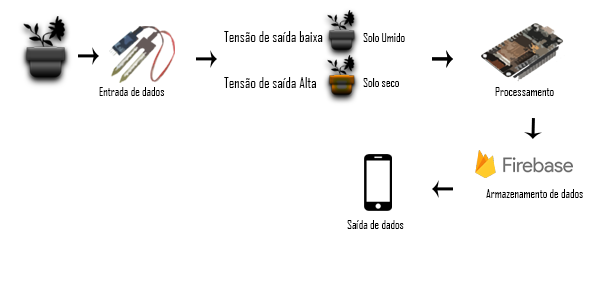

Visão Geral
Este é um projeto desenvolvido para a disciplina de Introdução a computação do curso de Sistemas para Internet do IFB. Tem como proposta pensar em um pequeno problema diário de casa que pode ser solucionado com arduino. Eu tenho dificuldade em lembrar de regar minhas plantas e muitas vezes elas acabam morrendo, poderia simplesmente colocar uma notificação no meu celular para me lembrar a hora certa de regar, mas uma ideia melhor seria um sistema em que monitore a umidade da terra que está no vaso de planta e envie uma notificação do momento exato de regar essa planta. Este é um projeto com nível de complexidade elevada porque :
1-levando em conta do que se trata de biologia será necessário fazer vários experimentos e testes.
2- É um projeto considerado IOT porque o objetivo é conectar objetos físicos de modo que interajam de forma inteligente usando um sensor e atuador.
3- Neste projeto irei usar várias referências de outros projetos que passarão por fases de teste e sendo assim podem funcionar e também podem não funcionar.
Componentes e Orçamento
Os componentes ultilizados serão
- Módulo WiFi ESP8266 NodeMcu ESP-12E
- Módulo sensor de umidade de solo
- Protoboard
O módulo Wifi ESP8266 NodeMCU é uma placa de desenvolvimento que combina o chip ESP8266, uma interface usb-serial e um regulador de tensão 3.3V. A programação pode ser feita usando LUA ou a IDE do Arduino, utilizando a comunicação via cabo micro-usb. o valor dela pode ser encontrado na faixa entre 40 a 50 reais. para esse tutorial fiz o orçamento na loja Hu-Infinito, é possível comprar online e retirar o pedido pessoalmente ou por correio. O Módulo Sensor de Umidade do Solo é uma tecnologia de baixo custo e baixo consumo de energia desenvolvida para detectar as variações de umidade, principalmente do solo, podendo também ser utilizado em terra, areia ou diretamente na água. Esse sensor custa em torno de 6 reais.
Funcionamento
O sensor envia uma corrente para medir a umidade do solo. Quando o valor está aumentando indica solo mais seco e quando está húmido o valor diminui